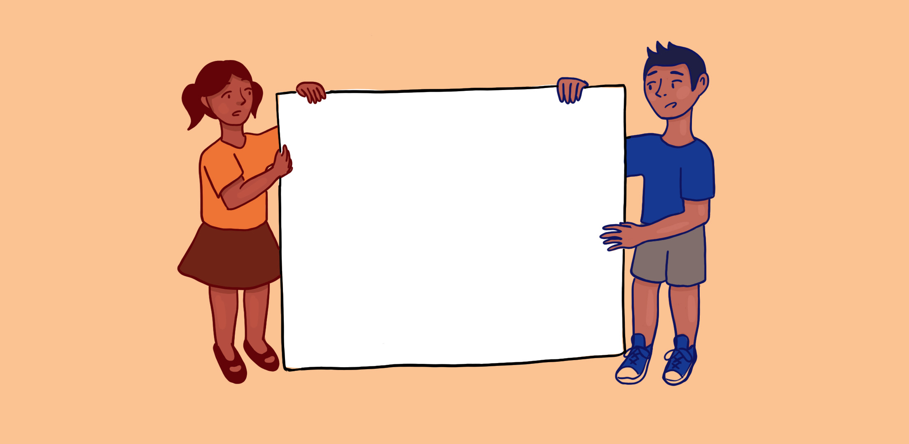

CONCLUSION
The Digital Divide in India refers to an unequal distribution of access to,
usage of, or influence of information and communication technology
among any number of separate groups. The digital divide especially affects
people belonging to marginalised communities such as women, people with
disabilities, and people of lower castes and classes. One of the reasons
for the widening of already extreme levels of inequality and the drag on economic
development is that many people still lack the resources and expertise necessary
to use the internet.The COVID-19 pandemic highlighted the digital divide in India
and its role in limiting access to vaccinations. Families and communities
frequently could not schedule appointments to register for vaccines through the
COWIN app due to a lack of digital literacy and access.It also affected access to
online education.
According to official data, just 20 per cent of Indians are proficient in using
digital services, even though half the country's population lacks access to
the internet.
Home
